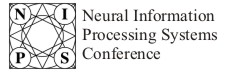

|  |
| NIPS : Conferences : current : Program |
|
|
||||||||||||||
|
Mark Johnson, Thomas Griffiths, Sharon Goldwater Brown University, , Brown University Adaptor Grammars: A Framework for Specifying Compositional Nonparametric Bayesian Mod This is part of the Poster Session which begins at 19:30 on Tuesday December 5, 2006 |